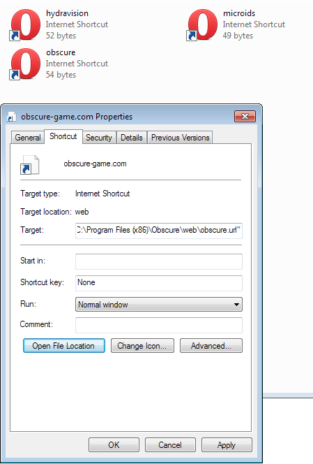

| Classic Shell http://www.classicshell.net/forum/ |
|
| Bug: internet icons not shown (shortcuts with no icon) http://www.classicshell.net/forum/viewtopic.php?f=19&t=1005 |
Page 1 of 1 |
| Author: | supraspecies [ Sun Jul 28, 2013 12:46 am ] |
| Post subject: | Bug: internet icons not shown (shortcuts with no icon) |
Due to some shortcut confusion in Windows 7, some internet shortcuts often have missing icons. But that isn't the problem, the problem is that Classic Shell 3.9.0 does not show shortcuts with no icon. Classic Shell 3.6.7 did, Windows Start Menu does, but Classic Shell 3.9.0 doesn't. Here's the screenshot (left is CS 3.9.0): Also screenshot of the files that shortcuts reference to:  |
|
| Author: | Gaurav [ Thu Nov 14, 2013 6:22 am ] |
| Post subject: | Re: Bug: internet icons not shown (shortcuts with no icon) |
Have you tried 4.0.2? I think this was fixed. |
|
| Page 1 of 1 | All times are UTC - 8 hours [ DST ] |
| Powered by phpBB® Forum Software © phpBB Group https://www.phpbb.com/ |
|